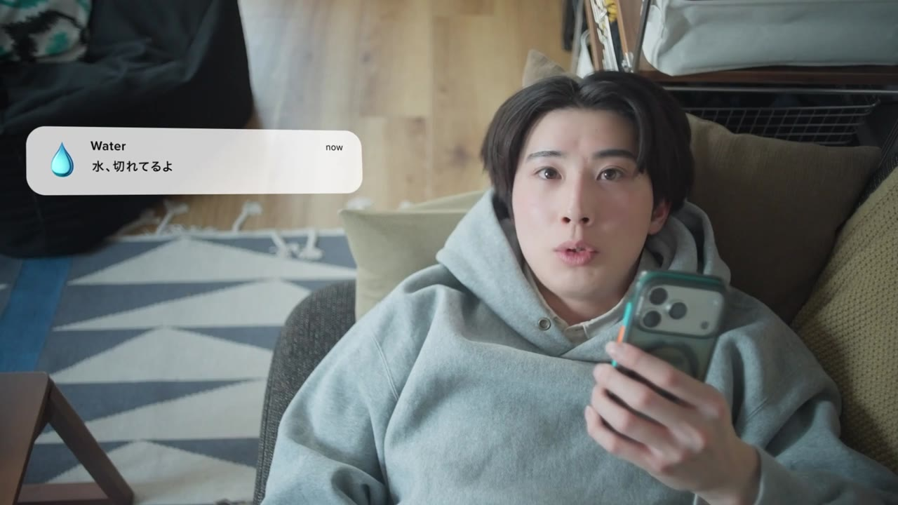

縦型・SNS
TikTokアカウント運用代行
バズを生むことも大切ですが、それがゴールではありません。投稿には一本ずつ狙いがあります。来てほしいコメントは来たか。最後まで見られたか。狙い通りに保存されたか。再生数だけでなく「狙った反応」との答え合わせを繰り返し、翌月の企画に反映します。SNS担当者として、継続的に伴走します。
Services
外注ではなく、担当者として動く。だから意図がずれない。だから、届く。
バズを生むことも大切ですが、それがゴールではありません。投稿には一本ずつ狙いがあります。来てほしいコメントは来たか。最後まで見られたか。狙い通りに保存されたか。再生数だけでなく「狙った反応」との答え合わせを繰り返し、翌月の企画に反映します。SNS担当者として、継続的に伴走します。


冒頭2秒のフック、中盤の裏切り、コメントしたくなる余白。カット単位で、最後まで見られる構成を設計します。面白いだけで終わらせず、認知から行動まで運ぶ企画が強みです。ブランドの魅力を、今の時代の文法で届けます。

SNSだけでなく、WebCM、ブランドムービー、採用、広告まで。「この映像をどこで、誰に、どう使うか」から一緒に考えます。目的に合わせた使い方まで設計し、つくって終わりにしない活用を提案します。
企画・脚本・撮影・編集はすべて内製です。外部委託を挟まないから、意図がずれず、修正も速い。
何を、誰に届けたいのか。整理するところから始めます。目的・ターゲット・媒体の特性を踏まえ、勝ち筋を設計します。
設計した方針をもとに、企画・撮影・編集・投稿まで一気通貫で。媒体ごとの見られ方も踏まえ、伝わる形に落とし込みます。
結果を振り返り、次にどう伸ばすかまで考えます。数字だけでなく、視聴者の反応や文脈も踏まえて改善を提案します。
分析で得た学びは、次の企画へ。ここが「つくって終わり」との違いです。
目的がまだ曖昧でも大丈夫です。整理するところから、担当者として入ります。